<!DOCTYPE html>
<html lang="en">
<head>
    <meta charset="UTF-8">
    <meta name="viewport" content="width=device-width, initial-scale=1.0">
    <title>page 3</title>
    <link rel="stylesheet" href="style.css">
</head>
<body>
<h1> Javascript page 3 - starting with concatenation arrays</h1>


<h2>Making a single array out of two arrays</h2>

<p>method: We use the concat() method</p>

<p>We previously discussed the concatenation of strings. When it comes to arrays, concatenation is very similar. We can use the same method for arrays as well: concat(). This method does not change the original arrays. It creates the new one by joining two existing arrays:</p>

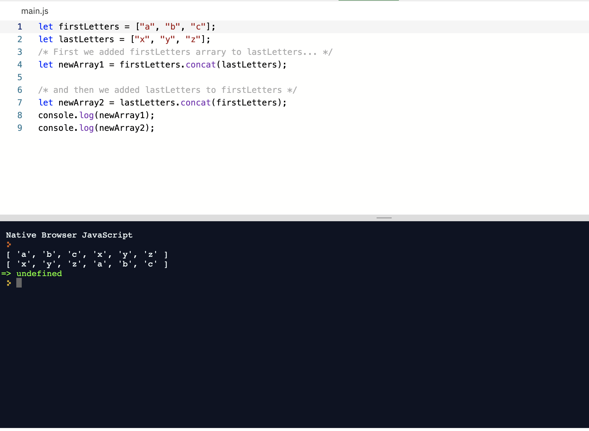

<h2>required challenge.</h2>
<p>Array Dimensions & Concatenation - Required - Concatenating Arrays:
You may recall learning in the Array Dimensions and Concatenation lesson that we can merge two arrays together using the concat() method. The nice thing about the concat() method is that it leaves the original arrays intact, so you can continue to use them in their original form or manipulate them in other ways after creating their concatenation. 

Concatenating arrays is just another array manipulation tactic that will no doubt come in handy in your coding journey.

Your challenge is to:
Create an array, firstHalf, containing the numbers 1 through 5 in ascending order.
Create another array, secondHalf, containing the numbers 6 through 10 in ascending order
Concatenate the two arrays into a new array, oneToTen, and ensure that the oneToTen array contains the numbers 1 through 10 in ascending order

Requirements:
You must use the concat() method correctly in order for the oneToTen array to have the numbers in the correct order</p>


<h1>FUck me first time !!!POWWWWWW</h1>

<pre>

// Create your arrays here:
let firstHalf = [1,2,3,4,5];
let secondHalf = [6,7,8,9,10];


let oneToTen = firstHalf.concat(secondHalf);

// These lines will log your arrays to the console:
console.log(firstHalf);
console.log(secondHalf);

</pre>


<h2>multidimensional Arrays SUB ARRAYS - </h2>
<p>same as a normal array but more levels of storage - think a box inside of a box</p>

<pre>var myArray = [ [val1, val2, val3], [val4, val5, val6] ]; We can see that myArray has only two values, that is two subarrays. It means that myArray[0] will return first subarray: [val1, val2, val3], while myArray[1] will return second subarray [val4, val5, val6]. Each subarray has three values. If we want to select items in subarrays, then we need to add one more set of brackets with an index as shown in the example below:</pre>

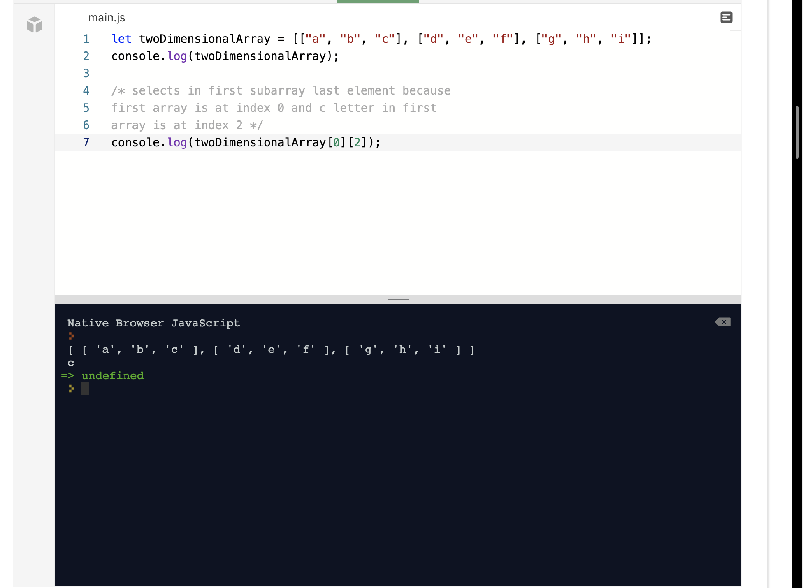


<h2>challenge - arrays </h2>
<p>Array Dimensions & Concatenation - Required - Multidimensional Arrays:
As you learned in the Array Dimensions & Concatenation lesson, and as you've already practiced if you've solved all the previous challenges, arrays can have other arrays as elements. It's useful to be able to navigate multi-dimensional arrays (arrays with arrays as elements) because many APIs and applications store data in this way and being able to navigate them ensures you'll be able to access the data you need. 

In the code window we've defined a deliberately obnoxiously complex multi-dimensional array called multiDimensionalArray. It contains the numbers 1 through 15, but it has multiple dimensions.

Your challenge is to:
Use array indexing to access the number 15 in multiDimensionalArray and assign it to a variable, fifteen
Now that you know the indexes that were required to access the number 15, create a one-dimensional array called indexArray which contains, in order, the array indices you used to access the number 15 in the fifteen variable.

Requirements:
All variables must be named correctly and have the correct values
Your indexArray will be tested to ensure that we can use its values to access 15 in the multiDimensionalArray</p>

<pre>
Something important to understand about multidimensional arrays, is that a single index in one array, can hold another array as a value.
So for example in this code below
let myArray = ['A', 'B', [1, 2, 3], 'C']
The value at the 3rd index of myArray is another array with the value of [1, 2, 3]
To get the value of that whole smaller array out of myArray, you would use the 3rd index to get it. And as indexes start at 0, the 3rd value in myArray would be accessed using this:
let myNewVar = myArray[2] 
Then myNewVar would hold the value of [1, 2, 3] 
As the 3rd value in myArray is also an array, then in order to get one single number out of the second array, you need a second index. You do this by using another [ ] value directly after the first. 
If you wanted to get the number 2 out of this array:
let myArray = ['A', 'B', [1, 2, 3], 'C'] 
Then you need two indexes one after the other, the first for the position of the array (at the 3rd index) and then the index of the number 2 within that array, like this: 
let myNumber = myArray[2][1] 
Using this method, and adding more indexes your original multi dimensional array name, you can drill down into all of the arrays that are nested inside each other for this challenge.
(If you are still lost, see image in the thread under this post)

</pre>
<h2>solution video</h2>
<p>https://www.youtube.com/watch?v=eu0WZeR7Q-4</p>


<pre>

// Access the value 15 from this multiDimensional array!
let multiDimensionalArray = [1, 2, 3, [4, 5, 6, [7, 8, 9, [10, 11, 12, [13, 14, [15]]]]]];

// Define the variable 'fifteen' here

let fifteen = multiDimensionalArray[3][3][3][3][2][0];
// Define the variable 'indexArray' here:

let indexArray =[3,3,3,3,2,0];

// This will log your variables to the console
console.log(fifteen);
console.log(indexArray);
</pre>

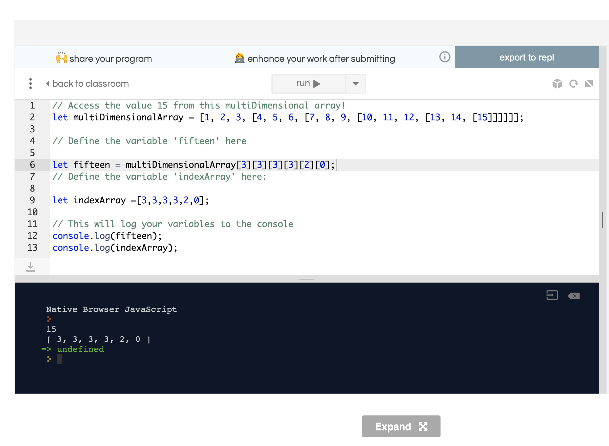


<h2>bonus challenge and solution concatenation of arrays</h2>

<pre>
// Country data to be used in your array construction:
// Fields are country name, population, area, population density
let countryData = [
    ["Afghanistan", 37209007, 652860, 57],
    ["Albania", 2938428, 27400, 107],
    ["Algeria", 42679018, 2381740, 18],
    ["Andorra", 77072, 470, 164],
    ["Angola", 31787566, 1246700, 25],
    ["Antigua and Barbuda", 104084, 440, 237],
    ["Argentina", 45101781, 2736690, 16],
    ["Armenia", 2936706, 28470, 103],
    ["Australia", 25088636, 7682300, 3],
    ["Austria", 8766201, 82409, 106],
    ["Azerbaijan", 10014575, 82658, 121],
    ["Bahamas", 403095, 10010, 40],
    ["Bahrain", 1637896, 760, 2155],
    ["Bangladesh", 168065920, 130170, 1291],
    ["Barbados", 287010, 430, 667],
    ["Belarus", 9433874, 202910, 46],
    ["Belgium", 11562784, 30280, 382],
    ["Belize", 390231, 22810, 17],
    ["Benin", 11801595, 112760, 105],
    ["Bhutan", 826229, 38117, 22],
    ["Bolivia", 11379861, 1083300, 11],
    ["Bosnia and Herzegovina", 3501774, 51000, 69],
    ["Botswana", 2374636, 566730, 4],
    ["Brazil", 212392717, 8358140, 25],
    ["Brunei", 439336, 5270, 83],
    ["Bulgaria", 6988739, 108560, 64],
    ["Burkina Faso", 20321560, 273600, 74],
    ["Burundi", 11575964, 25680, 451],
    ["Côte d'Ivoire", 25531083, 318000, 80],
    ["Cabo Verde", 560349, 4030, 139],
    ["Cambodia", 16482646, 176520, 93],
    ["Cameroon", 25312993, 472710, 54],
    ["Canada", 37279811, 9093510, 4],
    ["Central African Republic", 4825711, 622980, 8],
    ["Chad", 15814345, 1259200, 13],
    ["Chile", 18336653, 743532, 25],
    ["China", 1420062022, 9388211, 151],
    ["Colombia", 49849818, 1109500, 45],
    ["Comoros", 850910, 1861, 457],
    ["Congo (Congo-Brazzaville)", 5542197, 341500, 16],
    ["Costa Rica", 4999384, 51060, 98],
    ["Croatia", 4140148, 55960, 74],
    ["Cuba", 11492046, 106440, 108],
    ["Cyprus", 1198427, 9240, 130],
    ["Czech Republic", 10630589, 77240, 138],
    ["Democratic Republic of the Congo", 86727573, 2267050, 38],
    ["Denmark", 5775224, 42430, 136],
    ["Djibouti", 985690, 23180, 43],
    ["Dominica", 74679, 750, 100],
    ["Dominican Republic", 10996774, 48320, 228]
];

// Define your arrays here:

let countries=[countryData[0][0], countryData[13][0], countryData[33][0], countryData[44][0]];
let populations=[countryData[0][1], countryData[13][1], countryData[33][1], countryData[44][1]];
let areas=[countryData[0][2], countryData[13][2], countryData[33][2], countryData[44][2]];
let densities=[countryData[0][3], countryData[13][3], countryData[33][3], countryData[44][3]];

let flattened =countries.concat(populations,areas,densities);

// The following lines will log your variables to the console:
console.log(countries);
console.log(populations);
console.log(areas);
console.log(densities);
console.log(flattened);
</pre>


<h2>Comparators - compare two values and return the boolean / true / false </h2>
<p>How do you use it?

Put one value on the left side, the other on the right side and add a comparator between them</p>

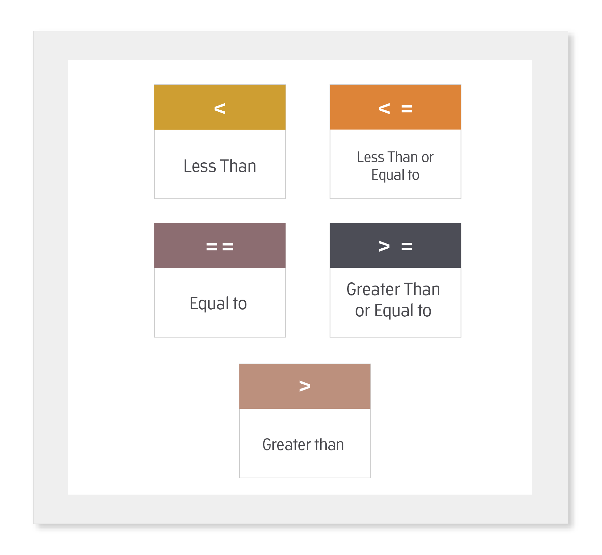


<h2>Comparators challenge</h2>
<pre>
Decisions, Decisions - Required - Comparators:
In the Decisions, Decisions lesson you learned about the use of comparators - computational operators that compare two values and return either true or false depending on the comparator and the values. You can use them to determine if things in JavaScript are equal to one another, one is greater than the other, and the like.

In the code window we've defined two variables, a and b. In past challenges you've mostly been creating variables and assigning values to them. In this one you'll need to use console.log() to log the results of your comparison operations to the console. 

Your challenge is to:
Log to the console whether a is less than b
Log to the console whether a is less than or equal to b
Log to the console whether a is equal to b
Log to the console whether a is greater than or equal to b
Log to the console whether a is greater than b</pre>

<h2>solution</h2>

<pre>
// Use these variables in your calculations:
var a = 10;
var b = 20;

// Log the results to the console. Don't forget to use comparators:
console.log(a<b);
console.log(a<=b);
console.log(a==b);
console.log(a>=b);
console.log(a>b);
</pre>

<h2>how to remember which < > is correct? </h2>

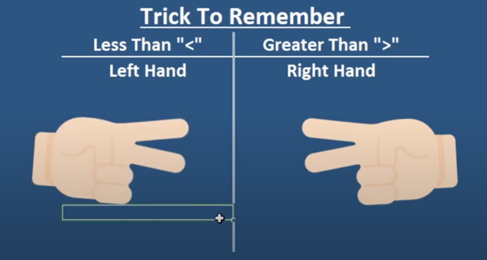


<h2>Booleans</h2>

<p>assigning of the true or false to an object</p>
<p>Booleans are useful in programming languages when you need something with one or two values: on/off, true/false, yes/no. Same goes for JavaScript.</p>

<pre>
let booleanTrue = true;
let booleanFalse = false;

console.log(booleanTrue, booleanFalse);</pre>


<p>comparator operators return a true or false...</p>

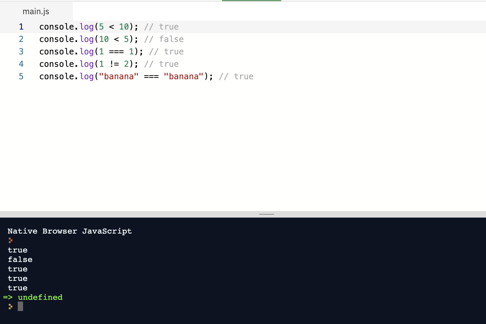

<h2>conditional statements</h2>
<p>We are going to talk about conditional statements as well in the following lessons. They check whether something is true or false and often use comparators for such check.</p>

<p>true or false: In a programming language, any value can ultimately be evaluated to true or false. For example, if a number is 0, null or an empty string, then it will be false. If a string is not empty or a number is not equal to 0 it is considered to be true. We can use the Boolean function to create a new boolean based on whether or not these values are true or false.</p>

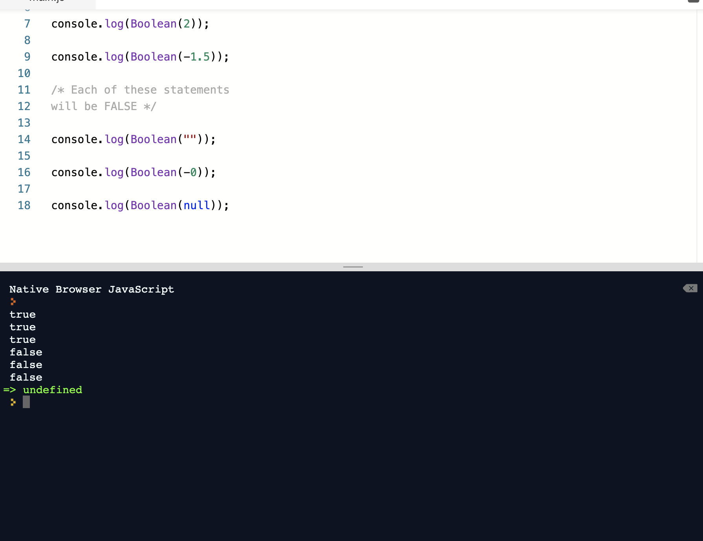


<h2>conditional execution</h2>
<p>COnditions are Javascript elements used to perform different actions based on the result of the condition, u can use it by using the <strong>if/else</strong> and <strong>switch</strong> statements.</p>
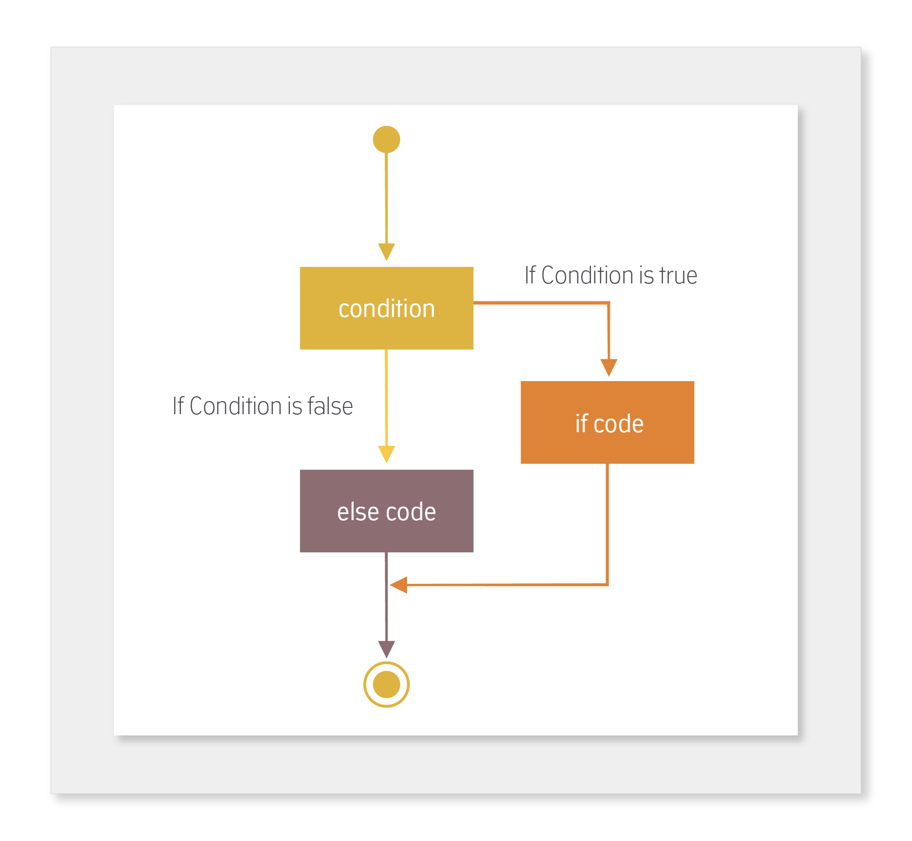

<p>Conditionals are like directions at a crossroad. They define which way to go. You can go either right or left, either true or false. Their output will determine the direction. Before we jump on the examples, we should explain the basics. Conditional statements control the flow of your program. It means it controls how your code runs under certain conditions. Some code blocks will run only if the condition evaluates to true. Whatever is false, will be skipped. It will not run. The code block under the false condition is going to be ignored, while the code block under the condition that evaluates to true will run. True and false values are boolean values as you may remember from the lessons before.</p>

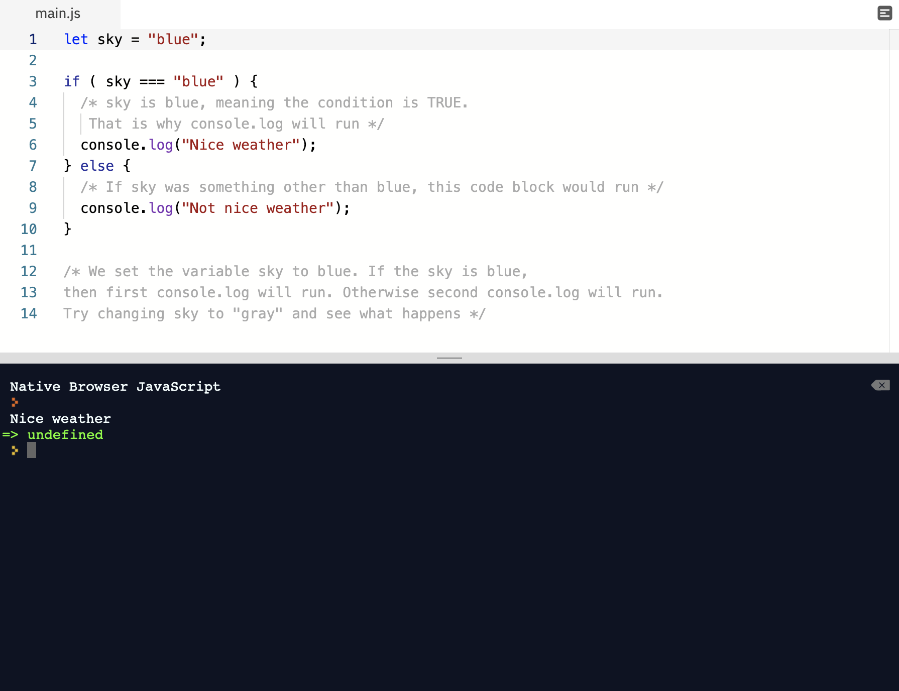

<h2>conditional challenge - decisions decisions - booleans</h2>
<p>
Decisions, Decisions - Required - Booleans:
So far in the course you've learned about several different data types, such as strings, numbers, integers, arrays and so forth. You might recall learning that booleans are a data type in JavaScript that can be either true or false. 

Often when writing code you will need to know the type of data you're working with, especially when trying to work with different data types together. Not knowing which data type you're working with can lead to errors in your code. 

Your challenge is to:
Create a variable, stringTrue, which has a value of true and is a string
Create a second variable, booleanTrue, which has a value of true, but is a boolean data type
</p>

<h2>challenge</h2>

<pre>
let stringTrue = 'true';
let booleanTrue = true;

console.log(booleanTrue);
console.log(stringTrue);</pre>


<h2>bonus challenge</h2>

<p>
Decisions, Decisions - Bonus - True or False:
Understanding the difference between data types is very important in software development. A common mistake developers make is mixing up whether a value evaluates to true or false.

In the code window to the right is a code sample from a developer's application that is supposed to control whether regular users can access the admin page from the public web. Unfortunately the developer has made a glaring mistake which has resulted in access being granted even though adminEnabled is set to false.

Your challenge is to:
Fix the adminEnabled variable so that the if statement starting on line 5 works correctly (you'll learn more about if statements later) 

Requirements:
You do not need to modify the if statement. There are multiple ways to complete this challenge.
</p>

<h2>solution</h2>

<pre>

// Fix the security issue:
let adminEnabled = false;

// This code will log your result to the console
if(adminEnabled === false){
    console.log("You need to enable admin access to access this part of the site!");
} else {
    console.log("Access Granted!");
}

</pre>

<H2>Boolean operators</H2>

<p>is a type of logical operator which tests whether something is true of false we use it by using the && or || operators</p>

<p>Double ampersand symbol && means that all conditions have to be true. If you have three conditions, even if one of them is false, the whole result will be false. Let’s use a simple comparison to clear things out. Remember, both sides need to be TRUE for the final output to be TRUE:</p>

<p>this means in the below example <strong>&&</strong> everything needs to be true for it to work, so true and true = Working, true / false = fucked false false = false ! </p>

<p>lets see in action.</p>

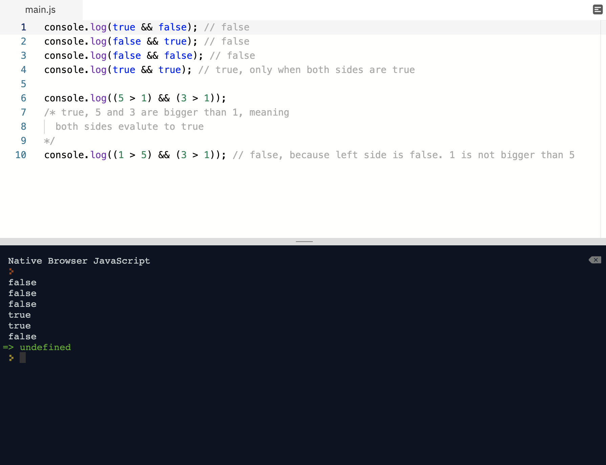


<h2>The or operator (||) only requires one side to be true. In other words, the output will only be false if both sides are false:</h2>

<h2>&&= Both sides true to be true || = output only false if both sides false </h2>

<p>examples</p>


<h2> the ! operator NEGATES THE OUTPUT think if this is used flip the result</h2>

<pre>
console.log(!false); // true
console.log(!true); // false

console.log(   !( (10> 5) && (5 > 1) )   );
							  /* !(true  &&   true )*/ 
							  /* true and true is true but ! operator negates it so the result is false */
</pre>

<h2>challenge -operators boolean operators</h2>
<p> Operators - Required - Boolean Operators:
You might recall from previous modules that there are several data types in JavaScript, and one of them is boolean. Boolean data types always evaluate to either true or false. But what if you wanted to check multiple boolean conditions at once and verify whether the entire statement, that is, all booleans combined together, resulted in true or false? 

Enter boolean operators. There are three boolean operators, sometimes also called logical operators:

Boolean AND, which is denoted with &&
Boolean OR, which is denoted with ||
Boolean NOT, which is denoted with !

By combining these operators and strategic sets of parentheses around different operands, you can evaluate any combination of events and decide which direction your code should take based on the result being either true or false. To demonstrate this, practice a bit below:

Your challenge is to:
Define a variable, num1, which has a value of 5
Define a variable, num2, which has a value of 10
Define a variable, result1, which determines if both num1 is greater than num2 and num2 is greater than 10
Define a variable, result2, which determines if either num1 or num2 is greater than 5
Define a variable, result3, which negates result2

Requirements:
All variables must be defined correctly and have the correct values, obtained by using the boolean operators</p>


<p>notes; Boolean AND, which is denoted with && </p>
<p>notes; Boolean OR, which is denoted with || </p>
<p>notes; Boolean NOT, which is denoted with ! </p>

<h2>challenge - Result First time baby!!!</h2>

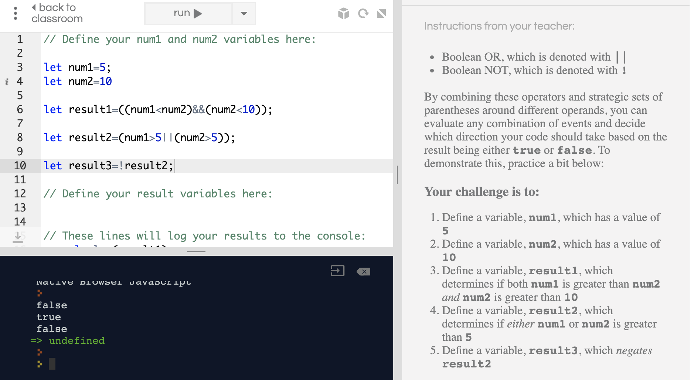

<p>rocked that challenge!!!! Love it!</p>

<h2>if else statements</h2>
<p>is a conditional statement checks if something is true or false we use it by</p>

<pre>
if (condition1) { code that is executed if condition1 is true } else { code that is executed if condition1 is false }

</pre>


<h2>if.... Else </h2>
<p>In other words, JavaScript checks to see if condition1 is true, if so, it runs the code under the if statement. It will not go to the else statement. And then it exits out of the if…else block. But if the condition in the if statement is false, then it runs the code in the else condition. Only one can be executed: either the code in the if or in the else statement</p>

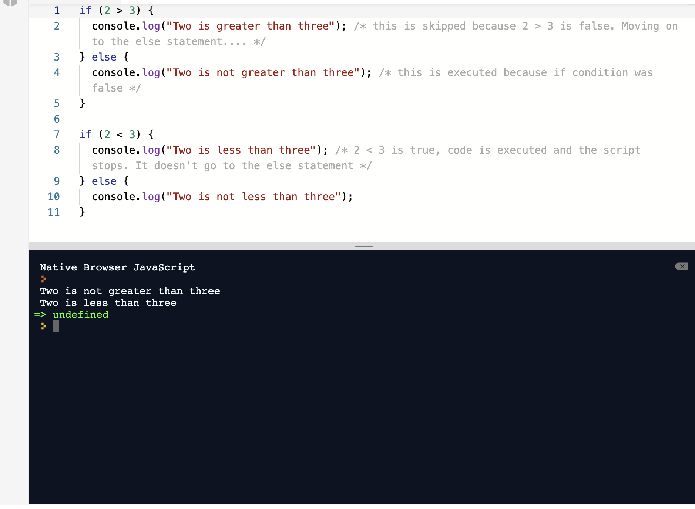

<h2>else IF</h2>
<p>is a conditional statement it checkes whether the conition is true adter the if statment was evaluated to be false, else if statement is added adter the id statement with similar syntax</p>

<p>Let’s take a look at the first example:

if (condition1) { block of code is executed if condition1 is true }

else if (condition2) { block of code is executed if condition1 is false, but condition 2 is true }

else { block of code is executed if condition 1 and condition 2 are both false }</p>


<p>dans notes: this is a list of checks, if statement: check it, if true, run code, if false keep checking.... </p>

<h2>example </h2>

<pre>

if (2 > 5) {
	console.log("If statement was executed!");
} else if (2 > 8) {
	console.log("else if statement was executed");
} else {
	console.log("else statement was executed");
}
</pre>

<h2>this will result in else statement</h2>
<p>the code ran the first two checks they came back false, so it keeps moving down the line to the else function.</p>

<h2>else if --- check that list </h2>
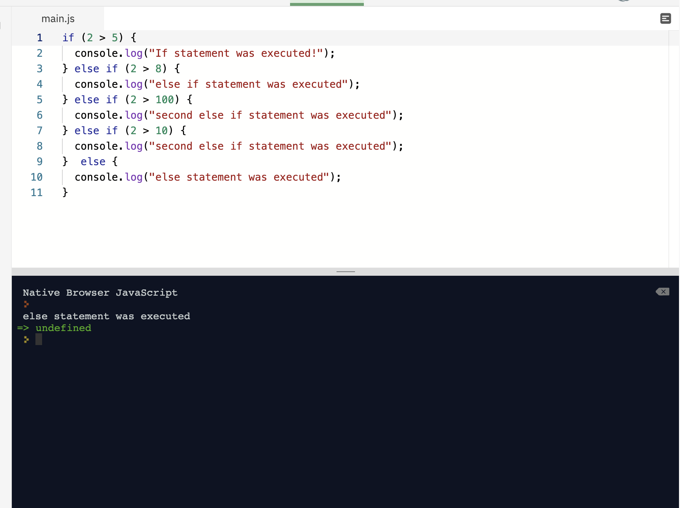

<em>You can have more than one else if statement. JavaScript will move on to the next else if statement until it finds the one that is true. If there is no else if statement that is true, then the code will move on to the else statement.</em>


<h2>boolean operators and conditionals</h2>
<p>evaluating the epresion to either true or false by using boolean operators,</p>
<p>we use this by combining comparators and conditionals inside of an <strong>if or else if</strong> statement</p>

<h3>Boolean operators and conditionals</h3>

<p>how it may look like</p>
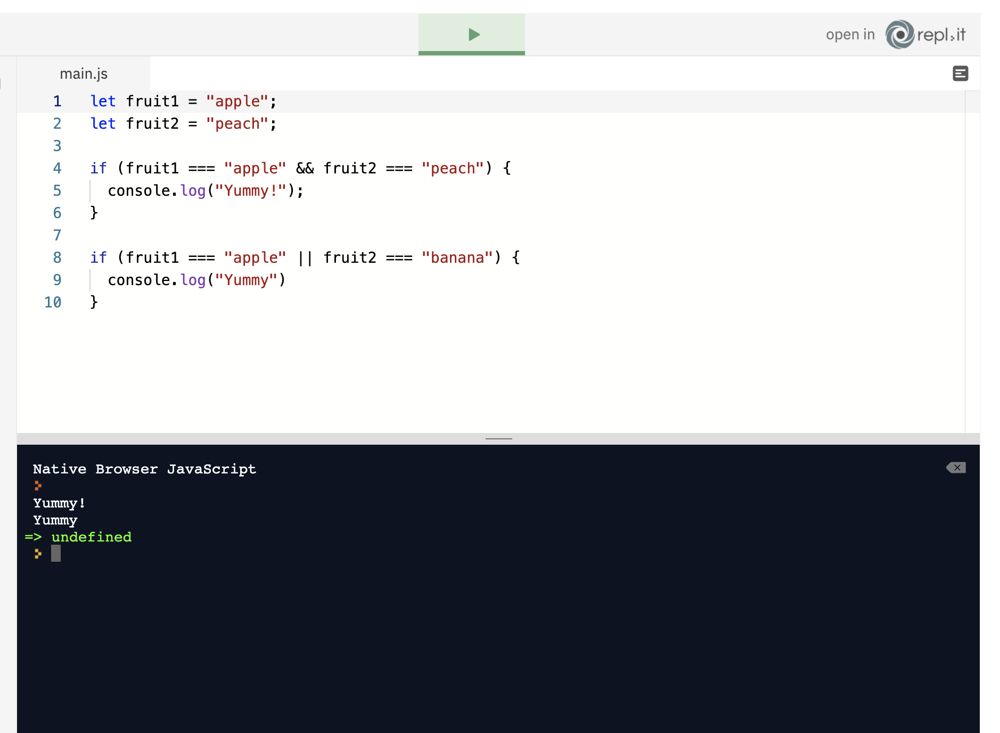

<em>The important thing to notice is that the || operator requires only one of the expressions to be true. In this case only fruit1 === "apple" results in true. Even though fruit2 === "banana" is not true, the code block will be executed. On the other hand, the && operator requires both expressions to be true. Try to replace the operators in the conditionals and see what happens. Put || in the first one and && in the last one. The result is different. Only the code block from the first condition is executed. In the second one, fruit2 is not equal to “banana” and the && operator requires all of the expressions to be true.</em>

<h2>challenge- if else challenge</h2>

<p>Operators - Required - If...Else: 
In the Operators lesson you learned that you can use if...else statements to determine the application flow of your JavaScript programs. If...else statements work by determining if a condition is true or false. If the condition is true, then the "if" code will be executed. Otherwise, the "else" code will be run.

In the code window we've defined two variables: a, with a value of 10, and b, with a value of 20. 

Your challenge is to:
Write an if statement that sets the variable named result to the value specified in the requirements below

Requirements:
If a is less than b, result should be a string, 'a is smaller'
Otherwise, result should be a string, 'a is not smaller'
You may update the variables a and b to test whether your if statement is working correctly during development, but they must be set back to pass the tests
Do not delete the declaration of result on line 4 or your code may not work</p>


<h2>solution: </h2>

<pre>
// These variables will be used to test your if statement:
let a = 10;
let b = 20;
let result;

// Write your if statement here:

if (a < b) {
  result=('a is smaller');
}
else {
  result=('a is not smaller');
}

// This will log your result to the console:
console.log(result);
</pre>

<h2>operators bonus challenge.</h2>

<p>if else!</p>

<p>By now you're probably starting to realize that application flow and therefore the logic of your programs depends heavily on whether certain conditions are true or false. As you know you can use if statements (sometimes called conditional statements or conditional logic) to decide which action to take for each possible case in your code.

In the code window we've defined a function called checkPassword(), which takes in a single argument, passwordCorrect, which will be either true or false. You might have seen this type of code in previous challenges, but if not, take a look on Google at how JavaScript functions work. You'll learn more soon. 

We've also defined two variables, accessGranted and message, which currently have no values (they're undefined) and will be overwritten and defined by your if statement if you've written it correctly.

Your challenge is to:
Write an if statement inside the function that updates (note: not creates!) the two variables, accessGranted (a boolean), and message (a string), to meet the requirements below

Requirements:
If passwordCorrect is true, accessGranted should have a value of true and message should have a value of 'Welcome to the admin panel!'
In any other case, accessGranted should have a value of false and message should have a value of 'Wrong password.'
All messages and variable names are case sensitive and must match the requirements exactly
To test your if statement, we'll call your function and pass the passwordCorrect argument to make sure your if statement works for both true and false cases

If you're stuck, the Operators lesson - specifically the If...Else unit - will give you a start. You may need to do some outside research in order to complete this challenge. Be sure to submit and compare your answer with the model solution (only available to view after you click submit).</p>


<h2>typical example:</h2> 
<pre>let itIsDay;
let message;
function dayNight(isItDarkOutside) {
  if (isItDarkOutside === false) {
    itIsDay = true;
    message = "It's daytime.";
  } else {
    itIsDay = false;
    message = "It's night.";
}</pre>


<h2>solution</h2>

<pre>
// These variables will be redefined by your if statement
let accessGranted;
let message;

// This function will handle whether passwordCorrect is true or false.
// Write your if statement inside it:
function checkPassword(passwordCorrect) {
   
   if (passwordCorrect===true) {
     accessGranted= true;
     message='Welcome to the admin panel!';
   }
   else {
     accessGranted=false;
     message='Wrong password.';

     
   }
    
}

</pre>

<h2>ternary operator </h2>

<p>https://www.youtube.com/watch?v=s4sB1hm73tw</p>

<p>If the condition is true, then expression1 will run, otherwise expression2. This is the same as if (condition) { expression1 } else { expression2 }</p>

<h2>example</h2>

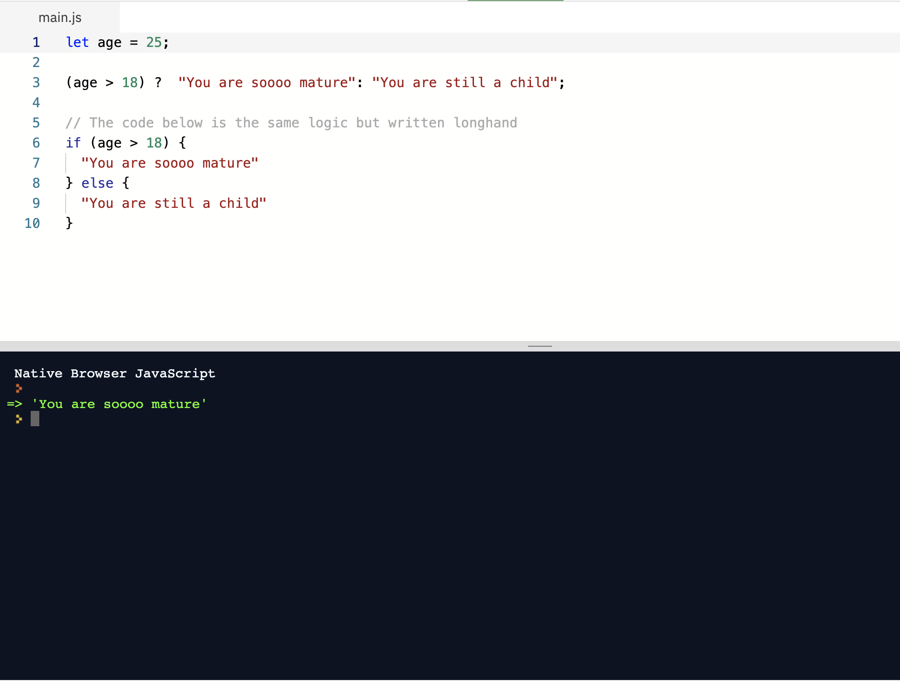

<p>Since 25 is greater than 18, the first expression will run: “You are soooo mature”. Change the number in variable age and see what happens. Make it greater or less than 18 to see the different results.

We could have written the same code with if else statements:</p>


<p>by using our if and else statements this code would look like this:</p>


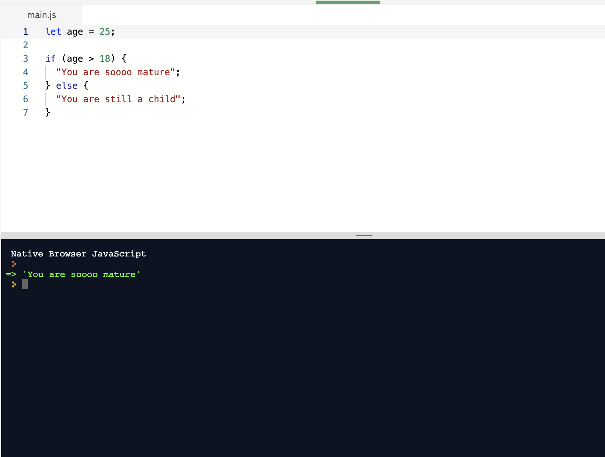

<h2>nested conditions</h2>

<p> are conditional statemtns inside of conditional statements, we can use them by creating new if/else blocks inside of if/else blocks</p>
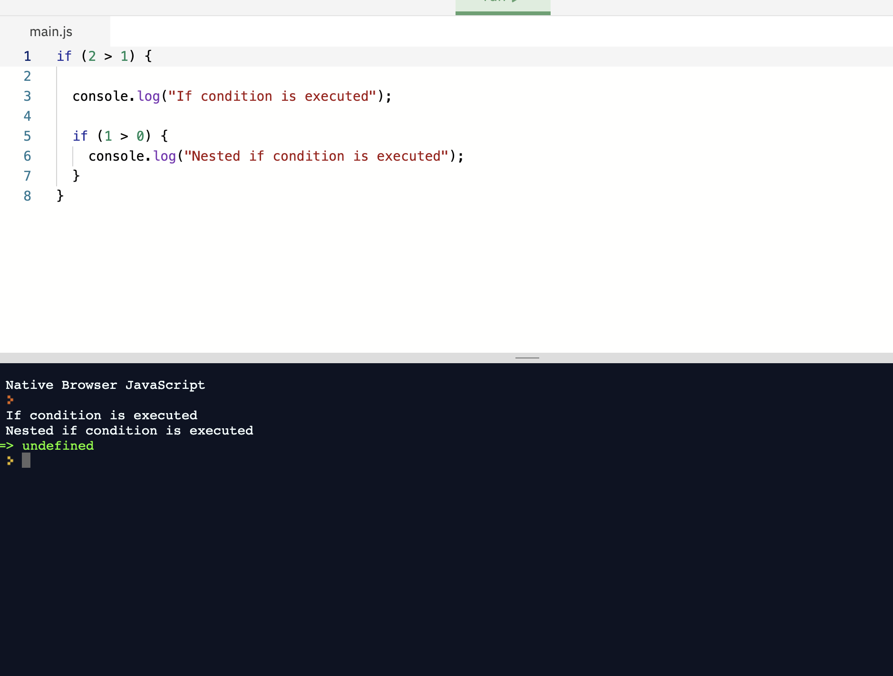
<p>this allows us to keep executing code for multiple if statements if true, inside of different code blocks. Handy could be if if if if if else</p>
<p>Two is higher than one, right? So this means that the first if statement is true. Since it is true, JavaScript executes console.log(“If condition is executed”), then moves on to the next line. The next line is another if conditional, this time it is the nested one. Now it checks whether one is greater than zero. Since that is also true, the code in the nested conditional will run, that is console.log(“Nested if condition is executed”).</p>

<h2>similarly this example is false so it skips to the else statement</h2>

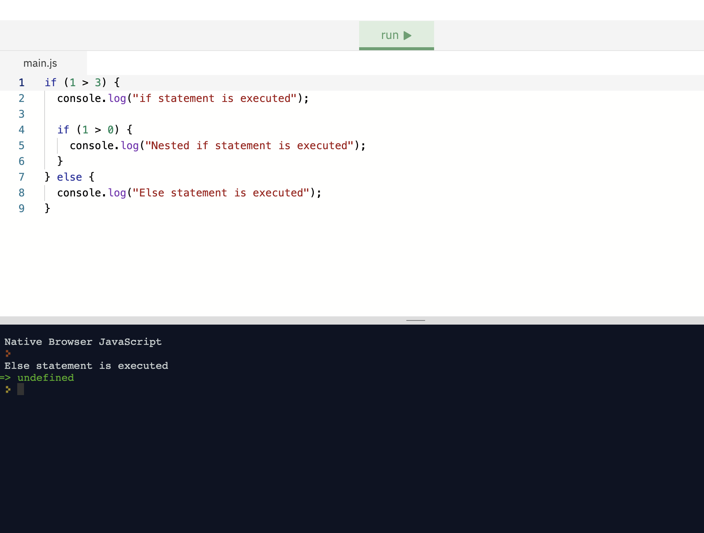

<p>Now let’s explain why do we see such result. Step by step, nice and easy ok? Ask yourself, is the first condition true or false? Is one greater than 3? No, it’s not. That means that first if statement is false. JavaScript then jumps onto the else statement. It doesn’t even look at the code in the if block since the condition is false. The nested statement in the code block of the if statement can be the most prominent truth in the world, but it is still going to be ignored, and its code will not run because of outer condition one > 3 is not true.</p>


<p>Ask yourself again, is the first condition true or false? Five is greater than two, right? So it is true. That is why we see “If statement here”. Then JavaScript moves on to the next line of the same if conditional. That is another if conditional. Is one greater than three? No. It means that nested conditional is false. Now JavaScript will move onto the else statement. But which one? The nested one or regular else statement? The nested is the answer! That is because JavaScript is still not finished with the nested conditional. It needs some result from it. It executed the nested else conditional and then stopped. It will not go to the other else statement.</p>

<h2>javascript switch</h2>
<p>is a javascript statemnt wthich compares each case to the value of the expression</p>
<p>the switch statement can be used when there are more cases to be checked.</p>

<a href="https://www.w3schools.com/js/js_switch.asp">W3 Schools switch</a>


<p>There are lots of new keywords in the example but worry not. We will explain each one step by step. You will notice in the above replit that we first declared variable fruit and assigned a string “banana” to it. Now we want to check whether some other strings are “banana”. In this case we have many such strings, so we are going to need a switch statement.

First, we write a switch that has an expression. This expression is what we compare cases to. We compare “apple” to the fruit variable, that is the string “banana”. All of the cases, as well as the default keyword, need to be wrapped in the curly brackets {}.

Now we get the case keyword. Each case is compared to the expression until the correct value is found. If the match is not found, then the code in default condition will be executed. In the next replit below if we remove the case for “banana”, the code from the default statement will show up:</p>

<h2>note: we must use the break; if not the interpreter will keep going! <strong>remember this</strong></h2>


<p> In the replit below we have the same code but with the break keyword removed from the last case. See what happens. The code from a default statement showed up, right? The break keyword indicates the end of the particular case. If it weren’t there, the interpreter would not stop. It would move onto the next statement.</p>


<h2>challenge operators - ternary operator.</h2>

<p>You might recall in a previous challenge that we used an if statement to set a variable, result. There's a shorthand way of doing this too. Assuming our input variables are already set, we can do it all - defining the variable and determining what its value should be with an if statement - in one elegant line of code, using the ternary operator. The ternary operator, when used to set variables elegantly, works like this:

var someVariable = testCondition ? valueIfTrue : valueIfFalse;

In the code window we've defined two variables: a, with a value of 10, and b, with a value of 20.

Your challenge is to:
Use the ternary operator to set a third variable, result, to the value specified in the requirements below

Requirements:
If a is less than b, result should be a string, 'a is smaller'
Otherwise, result should be a string, 'a is not smaller'
You may update the variables a and b to test whether your if statement is working correctly during development, but they must be set back to pass the tests
You must use the ternary operator</p>

<pre>
var someVariable = testCondition ? valueIfTrue : valueIfFalse;
</pre>


</body>

</html>